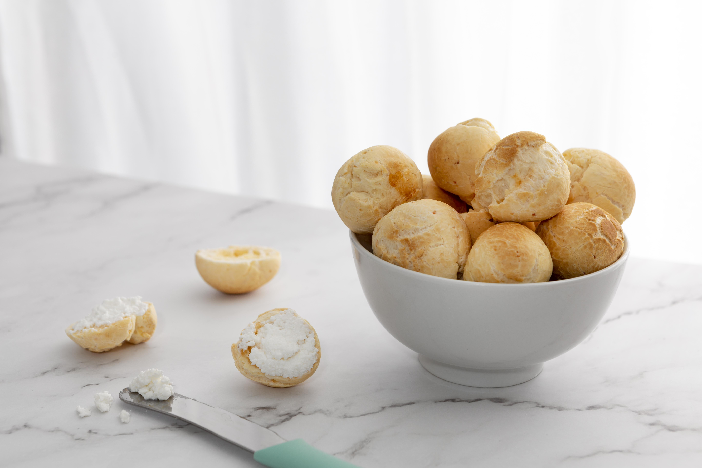

Pão de queijo

Descrição:
Preparamos a receita tradicional, com polvilho azedo, que fica com um puxa-puxa muito gostoso.
A casquinha crocante e o gostinho de queijo em cada mordida. Pode dobrar a receita e congelar os pãezinhos.
Ingredientes:
- 400 gramas de mussarela ralada (ou queijo minas padrão)
- 500 gramas de polvilho azedo
- 100 ml de leite
- 100 ml de água
- 3/4 de xícara de chá de óleo
- 1 colher de café (cheia) de sal
- 2 ovos (levemente batidos)
Modo de Preparo:
-
Peneire o polvilho para a massa não ficar com gruminhos.
De preferência, utilize óleo vegetal de sabor mais neutro,
como canola, milho e girassol. Quebre os ovos em um recipiente
separado para verificar se estão bons;
-
Em uma leiteira (ou panela), coloque o leite, a água, o óleo e o sal.
Misture para incorporar e leve ao fogo médio até ferver.
Coloque o forno para preaquecer a 180 ºC;
-
Em um recipiente, coloque o polvilho azedo, despeje o líquido que ferveu
e vá misturando com uma espátula (ou colher). Cuidado para não se queimar.
Após escaldar o polvilho, espere a massa amornar para continuar a receita;
-
Adicione os ovos e comece a misturar com as mãos.
Se a massa estiver quente, os ovos vão cozinhar;
-
Acrescente o queijo e vá misturando até formar uma massa homogênea.
O ponto da massa é quando ela começa a desgrudar da mão;
- Unte a mão com óleo vegetal. Pegue pequenas porções da massa,
molde em formato de bolinhas (cerca de 20 gramas cada ou maiores,
conforme você preferir);
-
Disponha os pães de queijo em uma forma untada com óleo vegetal,
deixando um bom espaço entre um e o outro. Leve ao forno preaquecido
a 180 ºC por 30 minutos;
- Pão de queijo saindo do forno quentinho! Coe um café fresquinho e aproveita.
Página Principal